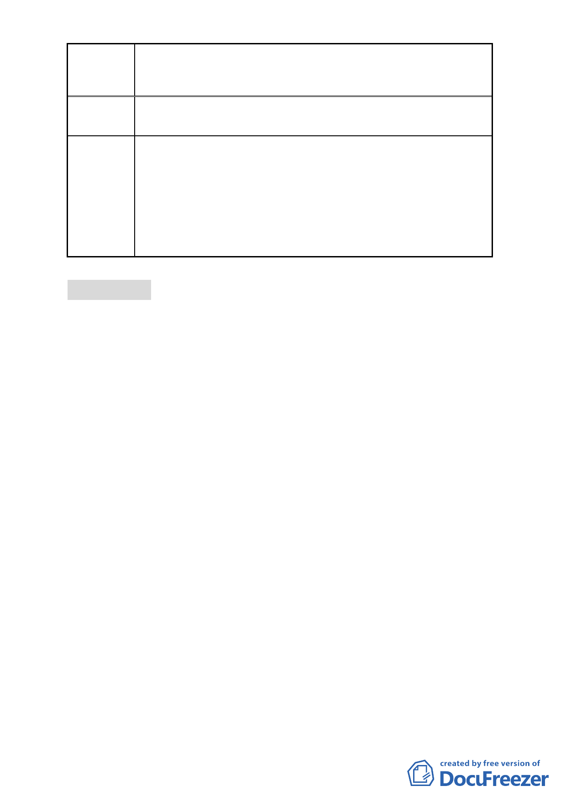

案名
變更臺北市士林區菁山段一小段 45 地號等 90 筆土
地及北投區大屯段二小段 111-2 地號等 5 筆土地共五處陽明
山國家公園區為保護區主要計畫案
（第三次通盤檢討）」變更調整，故本案維持原變更範圍。
委員會
決議
本案係市府配合內政部 102 年 7 月 4 日台內營字第
1020241926 號公告之「陽明山國家公園計畫（第三次通盤檢
討）」案，將劃出國家公園計畫範圍之土地，變更回復為保護
區。因此，有關公民或團體建議將所持有土地劃出國家公園
計畫範圍之陳情意見，非本會審議範疇。惟為兼顧土地使用
權益，請市府大地工程處就公民或團體陳情地點擬興闢之產
業道路位置，再與陳情人協商。
審議事項 三
案名：修訂臺北市南港區南港段一小段 379-1 地號等 43 筆土地住
宅區（特）土地使用分區管制細部計畫案
案情概要說明：
一、計畫緣起
本計畫範圍位於 91 年 7 月 12 日府都四字第 09115514600
號公告「擬訂南港經貿園區特定專用區 R13 街廓細部計畫案」
所劃定之更新地區內，區內建物老舊寙陋、未能與鄰近之南
港經貿園區配合，但由於面積廣、區內所有權人數眾多，且
現況使用容積高、改建誘因不足，導致重建整合困難。
100 年 9 月 20 日府都新字第 10031165100 號公告「修訂
臺北市老舊中低層建築社區辦理都市更新擴大協助專案計
畫」，本計畫經檢討符合『行動計畫一：以都市計畫專案變更
方式協助更新重建』之條件。市府爰依都市計畫法第 27 條第
1 項第 4 款規定，辦理本變更計畫。
二、計畫面積
本計畫範圍面積 10,693 平方公尺，使用分區為住宅區（特），
建蔽率 45%，容積率 225%。
-6-